León
Ataque 34 · Defensa 10 · Velocidad 7
112 de vida
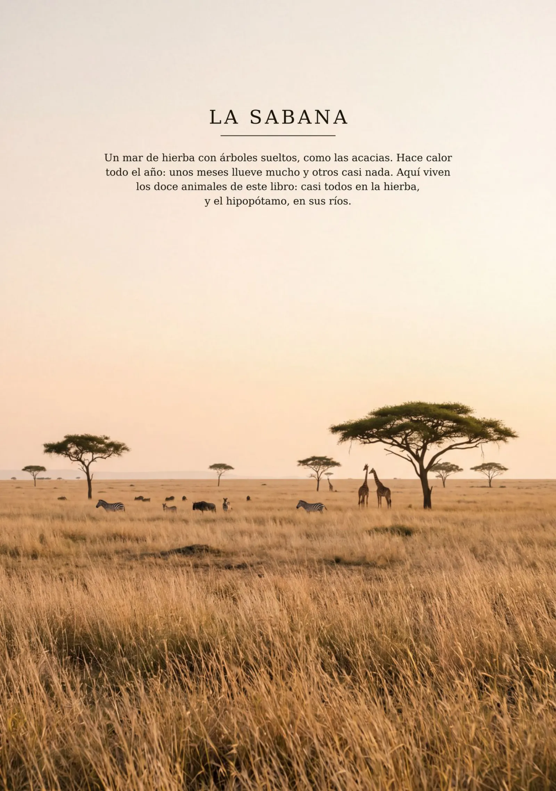
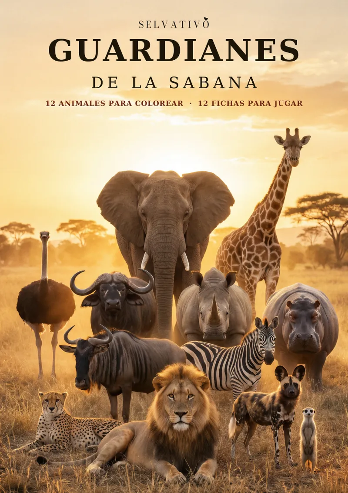
Selvativo
Cómo funciona
Aquí pintas animales y descubres sus secretos. Después, sus fichas se convierten en cartas de juego.
Por ejemplo, el león, de Guardianes de la Sabana.
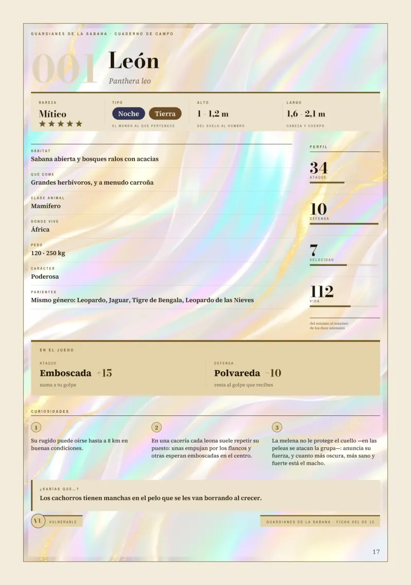
1 La fichaCuánto pesa, dónde vive y algo sorprendente.
2 El retratoEl animal en su mundo.
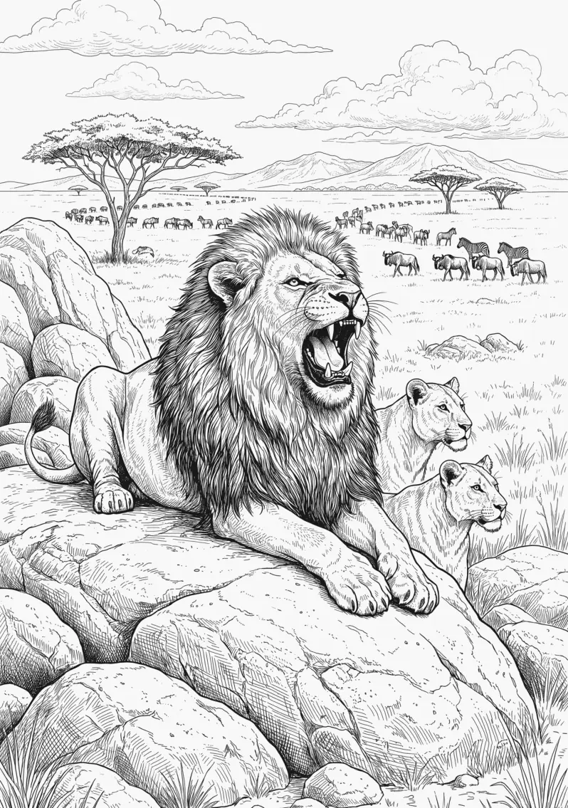
3 La láminaUn dibujo para pintar.
Cada uno, con su ficha, su retrato y su lámina.
Una lámina para pintar de cada animal.
León · Ficha 001
El primero de cada libro, con su retrato y su ficha. Elige uno y toca la carta para darle la vuelta.
Cada ficha es una carta de juego. ¿Quién gana?
Así se lee una ficha
Todas las fichas hablan el mismo idioma: puedes enfrentar a los animales de un libro con los de cualquier otro de la colección.
Cómo se juega
Tú llevas el león. Las reglas son las del libro, y la hoja de duelo se rellena como en el libro: debajo de las fichas tienes la guía.
Ataque 34 · Defensa 10 · Velocidad 7
112 de vida
Ataque 37 · Defensa 10 · Velocidad 3
135 de vida
Toca un animal para ver su ficha.
Antes de empezar
Dos jugadores, un animal cada uno. Tú llevas el león; el tigre lo juega la web.
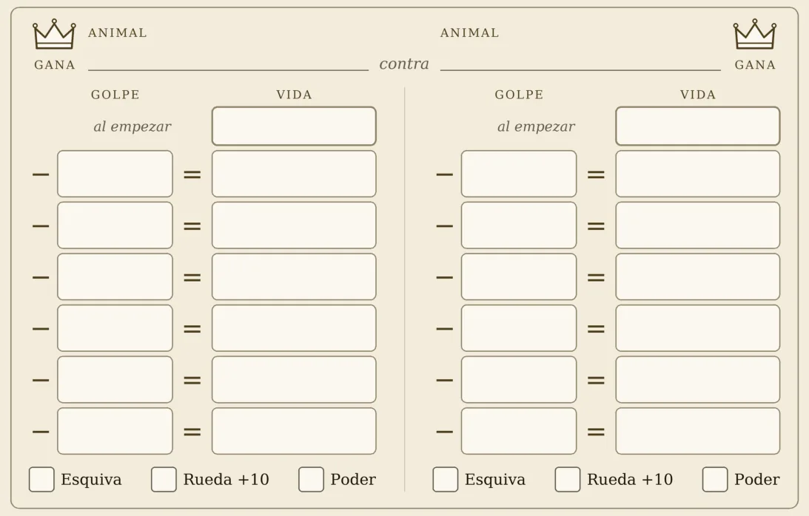
Así se rellena la hoja
A lápiz, como dice el libro: para borrar y volver a jugar.
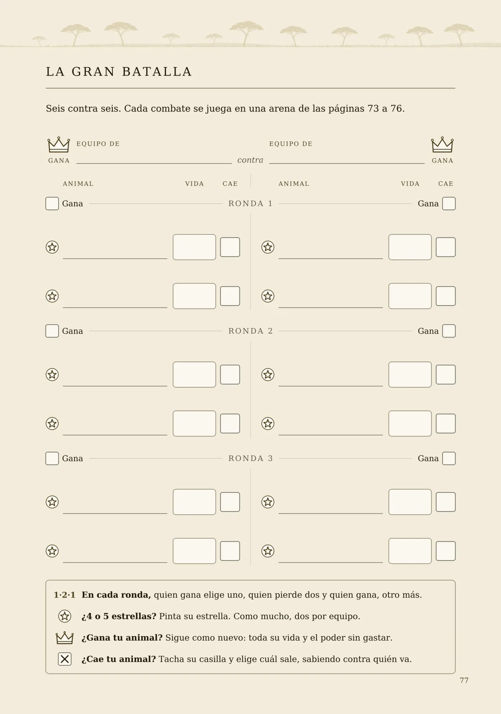
Como el duelo, pero por equipos: seis animales cada uno.
Primero, el reparto: tres rondas de piedra, papel o tijera. En cada una, quien gana elige uno, quien pierde dos y quien gana, otro más.
Gana quien deje al otro sin animales.
Para jugar aquí
Ocho preguntas, una de cada libro. Toca cada carta para ver la respuesta.
Y para jugar
En el libro se juegan con lápiz. Aquí, con el dedo.
Doce animales de siete libros están escondidos aquí. Rodéalos: arrastra el dedo de la primera letra a la última. En la sopa no hay tildes.
Doce animales de los ocho libros, con la pista que les escribió su libro.
Y en cada libro, además: sus récords, el cuaderno de exploración e inventa tu animal.
Al final del libro
Los doce animales de este libro son de verdad. Viven en un sitio de verdad, muy lejos de aquí, y ese sitio está cambiando.
La sabana es enorme, pero cada año queda un poco menos. Donde antes había hierba ahora hay campos, carreteras y pueblos. Las personas también necesitan un sitio donde vivir; lo difícil es dejar bastante para todos.
Una sexta parteMás de la mitad de África les valdría a los elefantes africanos para vivir, y hoy solo andan por una sexta parte de ese sitio.
Muchos animales del libro beben en las mismas charcas. Hay años en que llueve poco y quedan muy pocas: entonces todos tienen que ir allí, cada uno a su hora. Por eso se cruzan el hipopótamo, la cebra y el león.
Y cada vez hace más calor, así que el agua de las charcas se evapora más deprisa.
De algunos de estos animales quedan muchos. De otros, muy pocos. Lo dice la UICN, y en cada ficha lo pone, abajo a la izquierda.
En peligroCorren un riesgo muy alto de desaparecer.
VulnerableCorren un riesgo alto de desaparecer.
Los otros seis: la cebra, el rinoceronte blanco y el búfalo cafre están casi amenazados (todavía no corren peligro, pero podrían correrlo pronto); del avestruz, la suricata y el ñu azul hay muchos y, por ahora, no corren peligro.
unos 2.400rinocerontes negros en 1995
6.788a finales de 2024
Quien explora, mira.
Y lo que mira, lo cuida.
Lo que sí puedes hacer
Se empieza mucho más cerca.
Lo que tiene nombre deja de ser «un bicho». Ya te sabes doce.
El agua de tu casa no viaja hasta la sabana, pero la costumbre sí: quien no la desperdicia aquí, no la desperdicia en ningún sitio. Cierra el grifo mientras te lavas los dientes.
Un gorrión, una hormiga, un lagarto, un gato. Míralos sin tocarlos y no les quites su rincón. Y no tires nada al suelo: el río que pasa por tu ciudad casi siempre acaba en el mar, y el mar es de todos.
Elige tu animal preferido de este libro y cuéntale a otra persona tres cosas suyas. Parece poco, y es lo más importante de esta página.
Un libro para cada rincón del planeta.
Próximamente
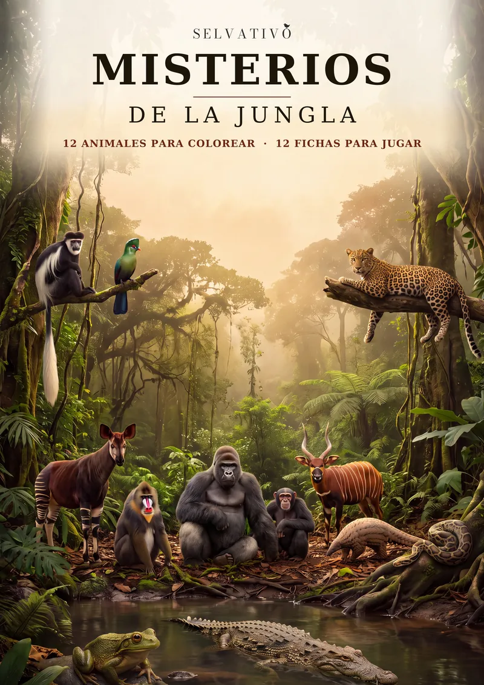
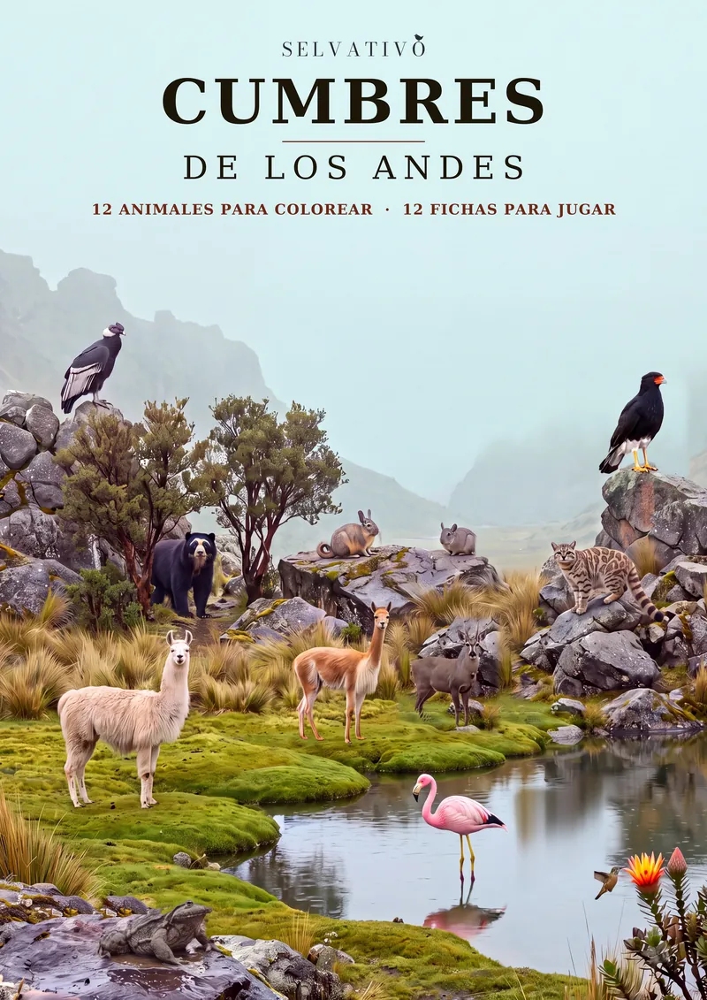
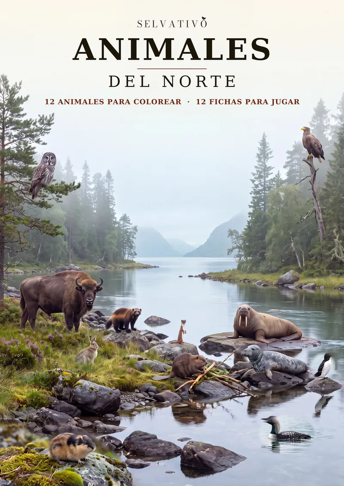
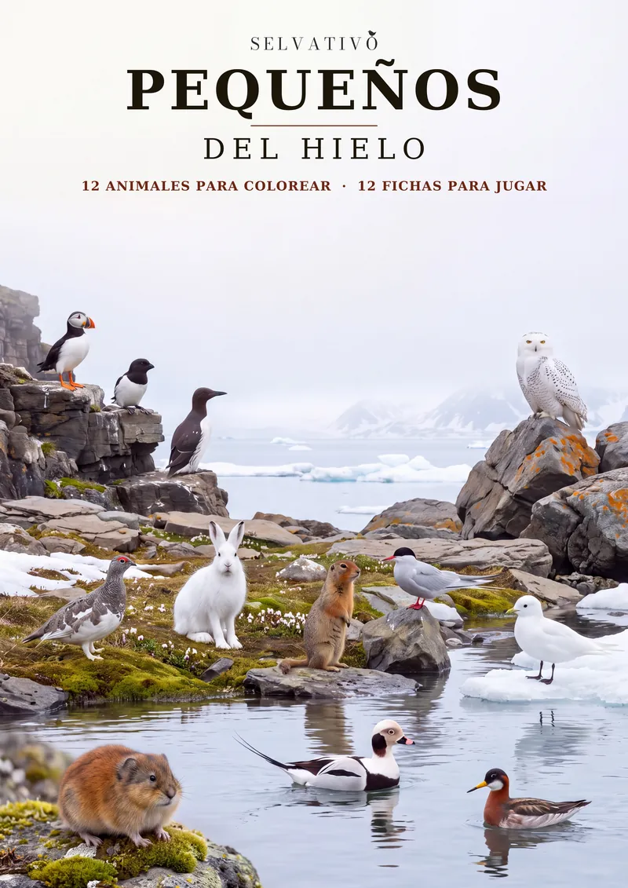
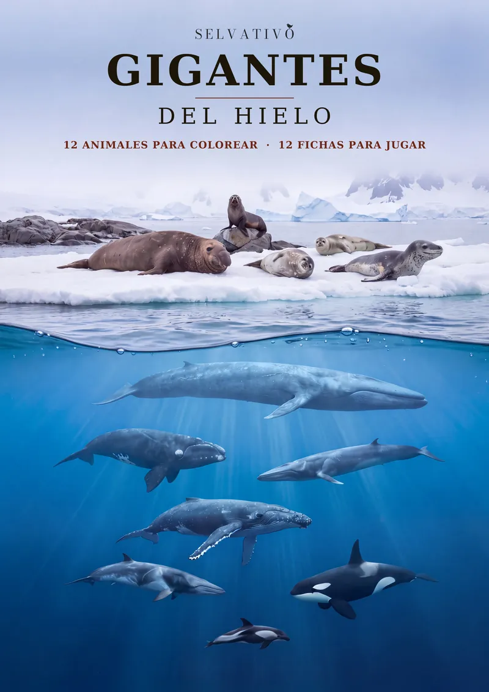
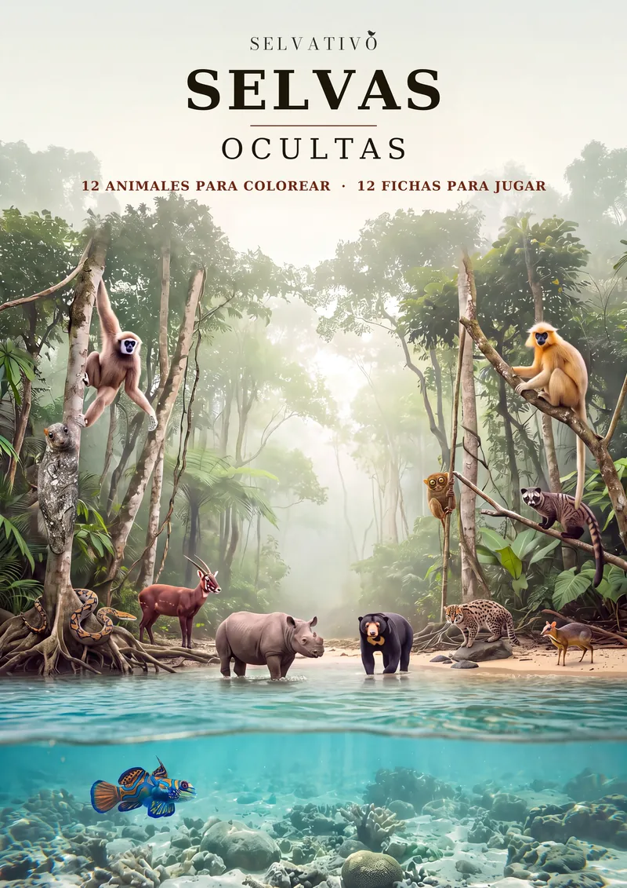
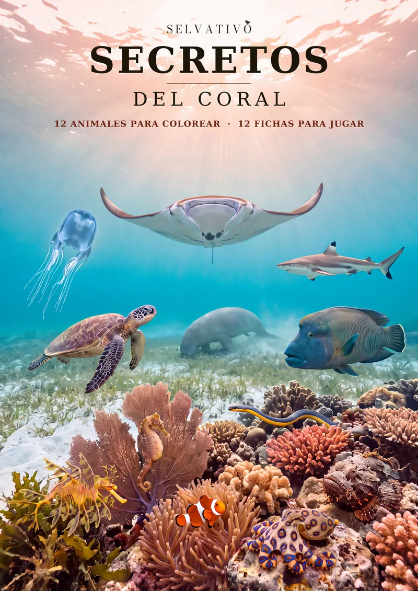
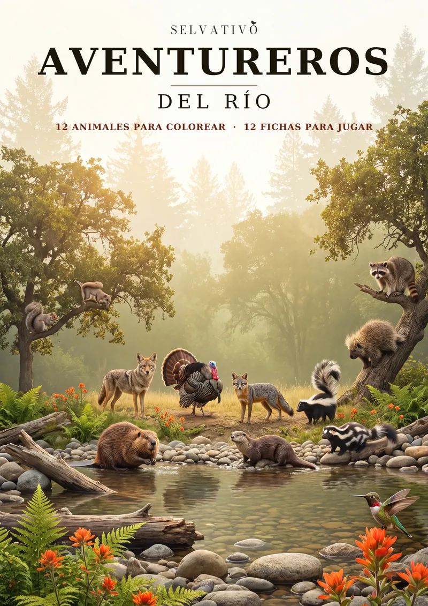
Ocho mundos. Noventa y seis animales.
Para colorear y para jugar.